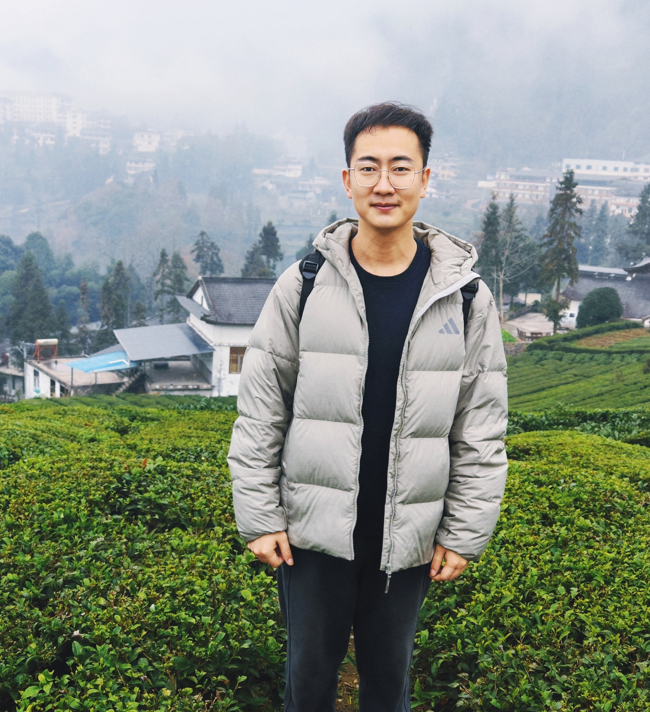

|  |
Sen Chen
Professor Nankai University, China College of Cryptology and Cyber Science Office: Room 563, The Building of Computer Science, Jinnan Campus Email: senchen@nankai.edu.cn |
I am a full professor at Nankai University and lead NKSSecLab (Nankai Software Security Laboratory). I am also a member of the research group, led by Prof. Zheli Liu.
My research focuses on software security, particularly in terms of software supply chain security. I received 6 Distinguished Paper Awards and the ACM SIGSOFT Early Career Researcher Award.
 December 2025: Received the ACM SIGSOFT Early Career Researcher Award in 2026 for outstanding contributions to advancing software supply chain security through pioneering techniques and tools in Software Composition Analysis (SCA) and Static Application Security Testing (SAST).
December 2025: Received the ACM SIGSOFT Early Career Researcher Award in 2026 for outstanding contributions to advancing software supply chain security through pioneering techniques and tools in Software Composition Analysis (SCA) and Static Application Security Testing (SAST).
 July 2025, one paper accepted by CCS 2025.
July 2025, one paper accepted by CCS 2025.
Invited as PC of USENIX Security 2025-2026, IEEE S&P 2025, CCS 2024-2025, ISSTA 2024-2025, OOPSLA 2024-2025.
June 2024: Won the Distinguished Paper Award at FSE 2024.

|
|---|
| ©2020 Sen Chen. All rights reserved |